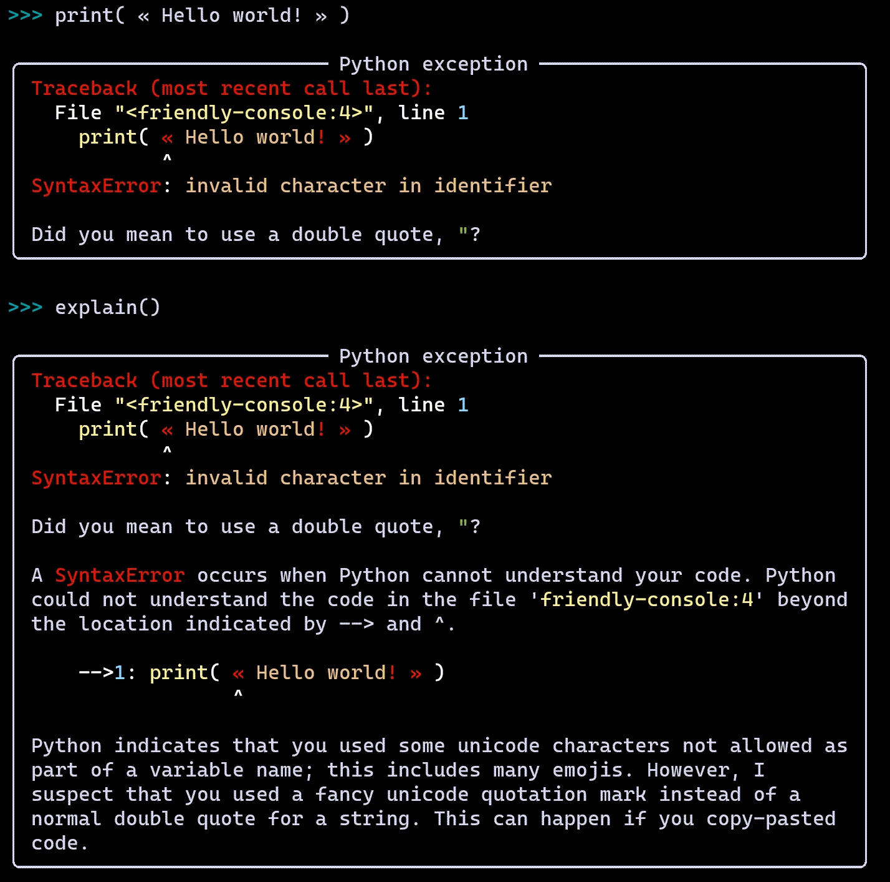

Warning
This is alpha software, currently in development. The API is subject to change without notice. The current documentation does not reflect the actual state of the project, but it does give a good idea of the actual aim.
Note that most screenshots have been taken with a very old version. We aim to replace those when we update the text, so that they look similar to this:
{kind=link}
Advanced Usage¶
There are various ways of using friendly-traceback. We first list the various basic options. If you wish to use friendly-traceback for running scripts that accept command line arguments, you might want to read the penultimate section on this page.
Note
In some of the examples below, we use the program hello.py found
in the demos directory, containing the following:
print("\nHello world!")
if __name__ == '__main__':
print("Running as main!")
As an exception hook:
import friendly_traceback friendly_traceback.install() # replaces the default sys.excepthook
Catching exceptions locally:
import friendly_traceback ... try: # Some code except Exception: friendly_traceback.explain()
When launching a Python script:
$ python -m friendly_traceback demos/hello.py Hello world! Running as main!
Launching the friendly console after running a script:
$ python -im friendly_traceback demos/hello.py Hello world! Running as main! Friendly Console version 0.0.10a. [Python version: 3.7.3] >>>
Only starting the console:
$ python -m friendly_traceback
Starting the console from an interpreter:
>>> import friendly_traceback >>> friendly_traceback.start_console()
You can also specify the verbosity level as well as the language to be used, either as command line arguments:
$ python -m friendly_traceback --lang fr --verbosity 5
or as optional arguments when using check_syntax or run_code:
friendly_traceback.check_syntax(..., lang='fr', verbosity=5)
Where the output is written?¶
By default, friendly tracebacks are written to sys.stderr.
However, it is possible to override this choice, as follows:
friendly_traceback.set_stream(stream)
Thus, the default amounts to:
friendly_traceback.set_stream(sys.stderr)
A special option exists to capture the output as a string:
friendly_traceback.set_stream("capture")
Later, this captured output can be retrieved using:
output = friendly_traceback.get_output()
# equivalent to
output = friendly_traceback.get_output(flush=True)
The value shown for the flush parameter is the default; this means that
the output will be cleared once it has been retrieved. If this is not the
desired behaviour, simply use flush=False.
How much information is printed?¶
The amount of information shown to the user can be changed using:
friendly_traceback.set_verbosity(level)
What each level correspond to is shown later in this documentation. The level currently used can be obtained as follows:
level = friendly_traceback.get_verbosity()
Language used¶
The language used can be explicitly set as follows:
friendly_traceback.set_lang("fr") # two-letter code for French
The language currently used can be obtained using:
lang = friendly_traceback.get_lang()
If the language requested does not exist, no error is raised nor any warning given, but the choice reverts to the default (English). More information on the choice of language (localization) can be found in the section about design.
As an exception hook¶
When “installing” friendly-traceback, one can use various optional parameters:
friendly_traceback.install(lang="fr", redirect="capture", verbosity=1)
This is equivalent to writing:
friendly_traceback.install()
friendly_traceback.set_lang("fr")
friendly_traceback.set_stream("capture")
friendly_traceback.set_verbosity(1)
Catching exception locally¶
As mentioned before, another way to use Friendly-traceback is to catch exceptions where they are expected to arise, such as:
try:
# Some code
except Exception:
friendly_traceback.explain()
This uses the default of writing to sys.stderr.
One can also temporarily redirect the output to any stream:
try:
# Some code
except Exception:
friendly_traceback.explain(redirect=stream)
By default, friendly-traceback takes its information from sys.exc_info().
It may happen that this is not what we want to show.
For example, the showtraceback method in Python’s code.py replaces one of the items prior to
showing the traceback to the user; we currently also do something similar in
friendly-traceback’s own console.
Finally, if one wishes to temporarily change some other option mentioned above, it can be done as in the following example:
try:
# Some code
except Exception:
lang = friendly_traceback.get_lang()
friendly_traceback.set_lang("fr")
friendly_traceback.explain()
friendly_traceback.set_lang(lang)
Running another script¶
We have already given an example of running another script:
$ python -m friendly_traceback demos/hello.py
Hello world!
Running as main!
What if the separate script has its own command line arguments?
If they are simply positional arguments, you can simply tack them
on at the end of the argument list. An example can be found
in the demos/ directory, which can be run directly or using
friendly-traceback.
$ python demos/adder.py 1 2 3
The sum is 6
$ python -m friendly_traceback demos/adder.py 1 2 3
The sum is 6.0
Note that this works even if you specify command line arguments that are specific to friendly-traceback:
$ python -m friendly_traceback --lang fr demos/adder.py 1 2 3
The sum is 6.0
However, what if one wants to run a script that uses optional named arguments
similarly to how friendly-traceback can use --lang and other optional
arguments? In this case, use -- to separate the list of arguments
to be used by the script from those written previously and
intended to be used by friendly-traceback:
$ python -m friendly_traceback --lang fr demos/adder.py -- --to_int 1 2 3
The sum is 6
An alterative is to use either a sitecustomize.py
or a usercustomize.py file, as described in the
Python documentation.
For example, you can use the following approach.
Create a
usercustomize.pyfile whose content is the following:import friendly_traceback friendly_traceback.install() # specify other desired options here
Set the
PYTHONPATHenvironment variable to that directory. On Windows, this can be done by navigating to that directory and writing:set PYTHONPATH=%CD%
You can now run your script normally: friendly-traceback exception handling will be used by default on it.
From the command line¶
It is recommended that you run the following command yourself so as to see what options are available for the version installed on your computer.
$ python -m friendly_traceback -h
usage: __main__.py [-h] [--color] [--lang LANG] [--verbosity VERBOSITY] [--import_only]
[--version] [--dev] [--formatter FORMATTER]
[source] [args [args ...]]
Friendly-traceback makes Python tracebacks easier to understand.
Friendly-traceback version 0.0.34a. [Python version: 3.8.4]
If no command line arguments other than -m are specified,
Friendly-traceback will start an interactive console.
Note: the values of the verbosity level described below are:
0: Normal Python tracebacks
1: Default - does not need to be specified.
The output does NOT include the standard Python traceback.
2: Python tracebacks appear before the friendly display
3: Python tracebacks appended at the end of the friendly display.
4: Python traceback followed by basic explanation
5: Only basic explanation
6: No generic explanation
7: Python tracebacks appear before the friendly display but
no generic explanation is included.
9: Python traceback only
The Python traceback for level > 1 is the simulated version, which
excludes calls from friendly-traceback itself.
You can use negative values to show the true Python traceback which
will likely include function calls from friendly-traceback itself.
Thus level -9 is equivalent to level 0.
Other values may be available, as we try to find the most useful
settings for beginners.
positional arguments:
source Name of the script to be run as though it was the main module run by
Python, so that __name__ does equal '__main__'.
args Arguments to give to the script specified by source.
optional arguments:
-h, --help show this help message and exit
--color, --colour Not implemented yet.
--lang LANG This sets the language used by Friendly-tracebacks. Usually this is a
two-letter code such as 'fr' for French.
--verbosity VERBOSITY, --level VERBOSITY
This sets the "verbosity" level, that is the amount of information
provided.
--version Displays the current version.
--formatter FORMATTER
Specify a formatter function, as a dotted path. Example: --formatter
friendly_traceback.formatters.markdown